| Giảng viên hướng dẫn | Đỗ Thanh Thái | |
|---|---|---|
| Nhóm | [Số nhóm] | |
| Thành viên | Nguyễn Khánh Trinh | [MSSV] |
| [Họ tên thành viên 2] | [MSSV] | |
| [Họ tên thành viên 3] | [MSSV] | |
Olist là nền tảng giúp các shop nhỏ ở Brazil bán hàng lên nhiều sàn thương mại điện tử. Doanh thu của nền tảng phụ thuộc vào người bán: dữ liệu cho thấy 20% seller lớn nhất tạo ra 82,5% GMV, trong khi chỉ 3,12% khách hàng mua lại lần hai. Vì vậy, mất một seller lớn đáng lo hơn mất một khách hàng. Đề tài xây dựng một kho dữ liệu và một hệ hỗ trợ quyết định cho đội chăm sóc người bán (Seller Success). Mỗi tháng, hệ thống trả lời ba câu hỏi: nên liên hệ seller nào trước, làm gì với seller đó, và nếu ngân sách hoặc nhân sự thay đổi thì kế hoạch đổi ra sao.
Kho dữ liệu. Kho được dựng trên DuckDB theo kiến trúc nhiều lớp: raw (Bronze), stg (Silver), core và mart (Gold). Mô hình đa chiều theo Kimball gồm 6 bảng fact thuộc ba kiểu (transaction, accumulating snapshot, periodic snapshot) dùng chung 8 dimension. File nguồn chỉ chứa trạng thái cuối cùng của đơn hàng, nên nhóm giả lập 26 đợt nạp theo tháng và che các mốc chưa xảy ra. Nhờ đó kho có lịch sử thật và mọi số liệu đều tính được "tại một ngày trong quá khứ" mà không nhìn thấy tương lai. Mỗi đợt nạp đi qua cổng chất lượng gồm 11 phép đối soát; lệch là đợt bị dừng.
Hệ hỗ trợ quyết định. DSS đọc dữ liệu từ kho và gồm ba lớp mô hình. Hồi quy logistic, huấn luyện cuốn theo thời gian, ước lượng xác suất seller sụt GMV. Bảng luật kết hợp rủi ro, giá trị và chất lượng vận hành để chọn kiểu can thiệp. Bài toán quy hoạch tuyến tính nguyên (MILP) chọn tập seller có lợi ích kỳ vọng cao nhất trong giới hạn ngân sách và số suất nhân viên. Người dùng có thể đổi tham số, kéo thả để sửa kế hoạch, và xem đường cong ngân sách.
Kết quả. Khi kiểm tra ngược trên 5 tháng chưa từng dùng để chọn tham số (03–07/2018), với cùng số seller được liên hệ, kế hoạch của DSS chọn trúng seller thật sự sụt GMV 55,5%, gấp đôi mức 25,9% khi chọn theo GMV lớn nhất. Đổi lại, kế hoạch bao phủ ít GMV mất hơn ở 4/5 tháng (19,3% so với 25,1%). Báo cáo trình bày rõ đánh đổi này. Phát hiện có giá trị nhất cho người quản lý đến từ kho dữ liệu: 72% đơn giao trễ có seller vẫn bàn giao đúng hạn, nên phạt seller theo tỷ lệ trễ tổng sẽ phạt oan. Nhóm cũng nêu rõ điều hệ thống chưa chứng minh được: dữ liệu không có nhóm đối chứng nên chưa đo được hiệu quả thật của việc can thiệp.
Bảng dưới đối chiếu 11 chuẩn đầu ra trong Bảng 1 của đề bài với phần báo cáo và phần hệ thống thể hiện chuẩn đó. Cột cuối là bằng chứng có thể kiểm tra lại trong mã nguồn hoặc trên ứng dụng.
Bảng 0.1. Chuẩn đầu ra, nơi thể hiện và bằng chứng
| Chuẩn | Nội dung | Mục báo cáo | Thể hiện trong hệ thống |
|---|---|---|---|
| L.O.1.1 | Khái niệm cơ bản về DW và DSS | 2.1, 2.4 | Bốn đặc trưng của Inmon được ánh xạ vào từng thành phần của kho (Bảng 2.1); phân biệt OLTP với OLAP trên chính dữ liệu Olist |
| L.O.1.2 | Vai trò của DW trong DSS | 2.5, 7.1 | DSS chỉ đọc từ mart và core; kho cung cấp feature đúng thời điểm, nhãn, KPI và nhật ký chất lượng |
| L.O.1.3 | Ví dụ thực tế về DW và DSS | 1.1, 2.6 | Bài toán lấy từ dữ liệu thật của Olist; đối chiếu với Amazon Account Health, Walmart Retail Link, UPS ORION |
| L.O.2.1 | Quy trình và nguyên lý thiết kế DW | 2.2, 4.1–4.3 | Bốn bước Kimball, bus matrix, kiến trúc 3 tầng và Medallion, cách tiếp cận lai giữa Inmon và Kimball |
| L.O.2.2 | Các vấn đề trong thiết kế DW | 3.3, 4.5 | 19 bất thường dữ liệu có cách xử lý; 9 quyết định thiết kế khó (grain đơn nhiều seller, hai loại trễ, SCD2 so với mini-dimension...) |
| L.O.2.3 | Thiết kế và hiện thực hệ thống DW | 4, 5, 6 | DuckDB 45 bảng, quy trình ELT 26 đợt, cổng chất lượng, 8 truy vấn OLAP mẫu, màn OLAP drill-down, 126 test hệ thống |
| L.O.3.1 | Khái niệm, đặc tính của MSS và DSS | 2.4, 7.1 | Phân loại DSS (data-, model-, knowledge-driven); đặc tính hỗ trợ, không thay thế người quyết định |
| L.O.3.2 | Các giai đoạn ra quyết định | 2.4, 7.2 | Bốn pha của Simon ánh xạ vào 7 màn hình (Bảng 7.2) |
| L.O.3.3 | Mô hình hóa trong DSS | 7.3–7.7 | Mô hình thống kê, bảng luật, tối ưu MILP, what-if và phân tích độ nhạy; ví dụ một seller từ dữ liệu đến quyết định |
| L.O.4.1 | Nguyên tắc phân tích, thiết kế DSS | 7.1, 7.8 | Phát triển lặp: thử khả thi, xây dựng, đánh giá, sửa; quyết định thiết kế được kiểm chứng bằng số liệu |
| L.O.4.2 | Phân tích, thiết kế, hiện thực một DSS | 7, 8 | DSS chạy được, có kiểm tra ngược 5 tháng, so với 4 cách chọn đơn giản, phân tích độ nhạy 9 kịch bản |
Bảng 0.2. Mục tiêu bài tập lớn (đề, mục 1.1) và nơi đáp ứng
| Mục tiêu | Đáp ứng |
|---|---|
| 1. Phân tích yêu cầu nghiệp vụ, xác định bài toán | Chương 1: người dùng, ba quyết định, KPI; nghiên cứu khả thi trước khi thiết kế |
| 2. Thiết kế kho dữ liệu đa chiều, gồm quy trình ETL | Chương 4 và 5: galaxy schema, quy trình ETL theo biến thể ELT |
| 3. Hiện thực backend (CSDL, ETL, OLAP) và frontend | Chương 5 và 6: DuckDB, SQL, OLAP; ứng dụng Streamlit 7 màn hình |
| 4. Thành phần DSS dựa trên kho đã xây dựng | Chương 7: dự báo, luật, tối ưu, what-if, bảng kế hoạch |
| 5. Đánh giá kết quả, hạn chế, hướng phát triển | Chương 8 và 9 |
| 6. Trình bày kết quả | Slide và buổi thuyết trình; kịch bản demo ở Phụ lục B |
Olist là một marketplace của Brazil. Nền tảng này không tự bán hàng, mà giúp các shop nhỏ đăng sản phẩm lên nhiều sàn lớn qua một tài khoản duy nhất, và lo phần thanh toán, vận chuyển, chăm sóc sau bán. Bộ dữ liệu công khai của Olist trên Kaggle chứa khoảng 100 nghìn đơn hàng thật đã ẩn danh, mua từ 09/2016 đến 10/2018, cùng thông tin người bán, sản phẩm, thanh toán, đánh giá và vị trí.
Với một marketplace, người bán (seller) là nguồn cung: seller ngừng bán hoặc tụt doanh số thì GMV của sàn giảm theo. Trước khi chọn đối tượng cho hệ thống, nhóm đo trên dữ liệu thật và thấy hai điều:
Vì vậy nhóm chọn bài toán ở phía người bán: phát hiện sớm seller có giá trị đang sụt doanh số, và quyết định cách can thiệp. Đây cũng là loại hệ thống các sàn lớn đang vận hành thật, ví dụ bảng Account Health của Amazon theo dõi tỷ lệ giao trễ và tỷ lệ lỗi đơn của từng người bán (mục 2.6).
Người dùng là trưởng nhóm Seller Success (đội chăm sóc người bán) của Olist. Đây là vai trò giả định cho đồ án, nhóm chưa phỏng vấn người dùng thật. Mỗi tháng, người này có một ngân sách và một số lượng nhân viên giới hạn, trong khi có khoảng 1.300–1.650 seller đang hoạt động. Hệ thống hỗ trợ ba quyết định:
Bảng 1.1. Ba quyết định mà hệ thống hỗ trợ
| # | Quyết định | Vì sao khó nếu không có hệ thống | Hệ thống trả lời bằng |
|---|---|---|---|
| 1 | Liên hệ seller nào trước? | Hơn 1.500 seller; seller lớn nhất chưa chắc là seller đang gặp rủi ro | Xác suất sụt GMV kết hợp giá trị seller; danh sách ưu tiên |
| 2 | Làm gì với seller đó: gọi giữ chân, hỗ trợ vận hành, email tự động hay chưa xử lý? | Phải tách được lỗi do seller với lỗi do vận chuyển | Bảng luật dùng hai loại trễ tách biệt; lý do bằng chữ cho từng seller |
| 3 | Ngân sách hoặc nhân sự thay đổi thì kế hoạch đổi thế nào? Có đáng chi thêm không? | Hai hành động có chi phí và công sức khác nhau | Tối ưu MILP, đường cong ngân sách, kéo thả để sửa kế hoạch |
Đây là các quyết định bán cấu trúc theo cách gọi của Gorry và Scott Morton: có phần tính toán được (rủi ro, chi phí) nhưng vẫn cần phán đoán của người quản lý (hiệu quả can thiệp, ưu tiên chiến lược). Đây đúng là loại quyết định DSS được thiết kế để hỗ trợ [3].
Trước khi dựng kho, nhóm viết một script khảo sát nhanh bằng pandas (scripts/feasibility.py, kết quả lưu ở evidence/feasibility.json) để kiểm tra các giả thuyết của bài toán. Nhiều kết quả đã làm thay đổi thiết kế ban đầu:
Bảng 1.2. Kết quả khảo sát khả thi và thay đổi thiết kế kéo theo
| Câu hỏi | Kết quả đo | Thay đổi trong thiết kế |
|---|---|---|
| Seller không bán 45 ngày có phải đã rời bỏ? | 39–50% số đó bán lại sau đó | Không gọi là "churn"; dùng hai nhãn "tạm ngừng" và "sụt GMV" |
| Có bao nhiêu seller lớn ngừng hẳn mỗi tháng? | Chỉ 14–40 seller trong top 20% | Mục tiêu chính là "sụt GMV", có 78–133 seller lớn mỗi tháng |
| Đơn giao trễ là lỗi của ai? | 72% đơn trễ có seller bàn giao vận chuyển đúng hạn | Tách seller_late khỏi customer_late; thêm màn "Lỗi giao trễ" |
| Có đơn hàng nhiều seller không? | 1.278 đơn | Thêm fact grain đơn × seller |
| Mô hình phức tạp có hơn không? | Random Forest không hơn Logistic Regression rõ rệt | Dùng Logistic Regression, dễ giải thích |
| Chỉ số vận hành có giúp dự báo không? | AUC gần như không đổi khi bỏ chúng | Dùng chỉ số vận hành để chọn hành động, không để dự báo |
Phạm vi. Hệ thống dùng bộ dữ liệu Olist công khai, giai đoạn phân tích chính từ 01/2017 đến 08/2018. Chi phí và hiệu quả của từng hành động can thiệp là giả định của nhóm, được ghi rõ trên giao diện và có phân tích độ nhạy. Hệ thống không chứng minh được hiệu quả can thiệp thật, vì dữ liệu không có nhóm đối chứng.
Đóng góp chính của nhóm:
Theo Inmon, kho dữ liệu là một tập dữ liệu hướng chủ đề, tích hợp, thay đổi theo thời gian và ổn định, phục vụ quá trình ra quyết định của nhà quản lý [1]. Bảng 2.1 cho thấy từng đặc trưng được hiện thực ở đâu trong hệ thống.
Bảng 2.1. Bốn đặc trưng của Inmon trong kho Seller Health
| Đặc trưng | Ý nghĩa | Trong hệ thống |
|---|---|---|
| Hướng chủ đề | Tổ chức theo chủ đề nghiệp vụ, không theo ứng dụng | Chủ đề "sức khỏe seller": bán hàng, giao hàng, đánh giá, thanh toán, seller theo tháng |
| Tích hợp | Thống nhất tên, kiểu, đơn vị từ nhiều nguồn | 9 file được chuẩn hóa ở stg: ép kiểu, dịch danh mục, chuẩn hóa tên thành phố, gom vị trí theo ZIP, suy ra vùng từ bang; dòng lỗi được cách ly |
| Thay đổi theo thời gian | Lưu lịch sử, mọi dòng gắn với thời điểm | 26 đợt nạp; dim_date với 5 vai trò; SCD2 trên dim_seller; snapshot theo as-of trong mart |
| Ổn định | Không sửa, không xóa dữ liệu đã nạp | Đợt đã nạp được đóng băng; thay đổi được ghi thành dòng hoặc phiên bản mới. Toàn bộ kho dựng lại được từ nguồn với kết quả giống hệt nhờ kiểm tra hash |
OLTP và OLAP. Hệ giao dịch (OLTP) của Olist ghi từng đơn, từng thanh toán và luôn giữ trạng thái hiện tại; file CSV công khai chính là ảnh chụp của hệ này. Kho dữ liệu phục vụ xử lý phân tích (OLAP): đọc nhiều, ghi theo lô, quét và gộp trên nhiều dòng, và giữ lịch sử. Sự khác biệt này giải thích vì sao nhóm phải giả lập các đợt nạp: CSV chỉ cho trạng thái cuối, còn kho cần biết trạng thái tại từng thời điểm.
Kiến trúc ba tầng. Tầng dưới gồm nguồn dữ liệu và vùng staging; tầng giữa là kho cùng các data mart và máy chủ OLAP; tầng trên là công cụ truy vấn, báo cáo, phân tích. Hệ thống ánh xạ lần lượt: CSV và schema raw, stg; schema core, mart với DuckDB làm máy ROLAP; ứng dụng Streamlit.
Medallion. Đây là cách chia lớp phổ biến trong các nền tảng dữ liệu hiện đại: Bronze giữ dữ liệu gốc, Silver đã làm sạch, Gold sẵn sàng cho người dùng. Trong hệ thống, raw là Bronze, stg là Silver, core và mart là Gold. Medallion chỉ quy định cách chia lớp; mô hình dữ liệu bên trong lớp Gold vẫn theo Kimball.
Ba cách tiếp cận xây dựng. Top-down (Inmon) xây kho tích hợp toàn doanh nghiệp trước rồi sinh các data mart. Bottom-up (Kimball) xây từng data mart theo quy trình nghiệp vụ, dùng các dimension dùng chung (conformed) để ghép lại. Cách lai kết hợp cả hai. Hệ thống theo cách lai nghiêng về Kimball: thiết kế bắt đầu từ câu hỏi của một bộ phận, dùng bus matrix và dimension dùng chung, nhưng có một lớp core tích hợp riêng mà các mart được sinh ra từ đó. Vì vậy các mart là dependent data mart.
Fact và dimension. Bảng fact chứa số đo của một quy trình nghiệp vụ; bảng dimension chứa ngữ cảnh: ai, ở đâu, khi nào, cái gì. Grain là định nghĩa một dòng của bảng fact đại diện cho cái gì, và là quyết định quan trọng nhất khi thiết kế [2]. Kimball phân biệt ba kiểu fact, và hệ thống dùng cả ba:
Lược đồ. Star schema gồm một fact và các dimension đã phi chuẩn hóa; snowflake tách dimension thành nhiều bảng chuẩn hóa; fact constellation (galaxy) gồm nhiều fact dùng chung dimension. Hệ thống là galaxy schema, và mỗi fact nhìn riêng là một star.
Slowly Changing Dimension. Type 1 ghi đè; Type 2 thêm dòng mới có khoảng hiệu lực, giữ được lịch sử; mini-dimension tách các thuộc tính đổi nhanh ra một dimension nhỏ để dimension chính không phình to. Hệ thống dùng Type 2 cho hạng ổn định của seller và mini-dimension cho hạng tháng (mục 4.4).
OLAP. Các phép cơ bản trên khối dữ liệu là roll-up (gộp lên cấp cao hơn), drill-down (đi xuống cấp chi tiết), slice (cố định một chiều), dice (lọc trên nhiều chiều) và pivot (xoay trục). Về kiến trúc máy chủ, ROLAP lưu khối trong bảng quan hệ và truy vấn bằng SQL, MOLAP lưu trong mảng đa chiều, HOLAP kết hợp hai cách. Hệ thống là ROLAP: mọi phép OLAP là câu SQL trên DuckDB, một số tổng hợp được tính sẵn bằng GROUP BY CUBE.
Hệ hỗ trợ quản lý (MSS) là việc ứng dụng công nghệ thông tin để hỗ trợ công việc quản lý, đặc biệt là ra quyết định. Trong nhóm công nghệ đó có kho dữ liệu, OLAP, khai phá dữ liệu, các mô hình vận trù học và DSS [3]. Hệ hỗ trợ quyết định (DSS) là hệ thống tương tác giúp người ra quyết định dùng dữ liệu và mô hình để giải quyết các bài toán bán cấu trúc. DSS hỗ trợ chứ không thay thế người quyết định. Một DSS gồm bốn thành phần: quản lý dữ liệu, quản lý mô hình, giao diện người dùng, và tùy chọn thêm thành phần tri thức.
Theo cách phân loại của Power, DSS có thể là data-driven (khai thác dữ liệu lớn), model-driven (dùng mô hình thống kê, tài chính, tối ưu), knowledge-driven (dùng luật, tri thức chuyên gia), communication-driven hoặc document-driven; một hệ kết hợp nhiều loại được gọi là hybrid DSS.
Quá trình ra quyết định của Simon gồm bốn pha: Intelligence (nhận ra vấn đề), Design (xây dựng mô hình và các phương án), Choice (đánh giá và chọn phương án), Implementation (thực hiện và theo dõi). Chương 7 trình bày cách từng màn hình của hệ thống phục vụ một pha.
Kho dữ liệu là thành phần quản lý dữ liệu của DSS. Trong hệ thống này, kho giữ năm vai trò mà DSS không tự làm được:
Các hệ thống dưới đây được nhắc nhiều trong tài liệu môn học [3], [5] và trong công bố của chính các doanh nghiệp. Nhóm dùng chúng để định vị hệ thống của mình.
Bảng 2.2. Một số DW và DSS thực tế, và điểm tương đồng với đề tài
| Hệ thống | Làm gì | Điểm tương đồng với Seller Health |
|---|---|---|
| Amazon Account Health | Bảng sức khỏe tài khoản người bán: tỷ lệ lỗi đơn, tỷ lệ giao trễ, tỷ lệ hủy; cảnh báo khi chỉ số vượt ngưỡng | Gần nhất với đề tài: theo dõi sức khỏe seller từ dữ liệu giao hàng và đánh giá |
| Walmart Retail Link | Kho dữ liệu bán hàng chia sẻ với nhà cung cấp để quyết định bổ sung hàng | Kho dữ liệu phục vụ quyết định của đối tác cung ứng, không chỉ nội bộ |
| UPS ORION | DSS dựa trên mô hình tối ưu tuyến giao hàng cho tài xế | DSS dựa trên mô hình tối ưu, có ràng buộc vận hành |
| American Airlines (quản trị doanh thu) | Mô hình dự báo nhu cầu kết hợp tối ưu để định giá và phân bổ ghế | Kết hợp dự báo và tối ưu dưới nguồn lực giới hạn |
Khác biệt chính của đề tài là phạm vi nhỏ và dữ liệu lịch sử công khai. Tuy vậy, chuỗi xử lý từ kho dữ liệu, qua dự báo, đến tối ưu dưới ràng buộc vẫn giống các hệ thống trên.
Nguồn là bộ Brazilian E-Commerce Public Dataset by Olist trên Kaggle, gồm 9 file CSV với tổng cộng khoảng 1,55 triệu dòng. Mỗi file được ghi hash SHA-256 và số dòng trong data/manifest.json. Khi dựng kho, nếu một file bị đổi, thiếu hoặc sai số dòng, quá trình dừng trước khi ghi vào kho.
Bảng 3.1. Chín file nguồn
| File | Số dòng | Grain | Ghi chú |
|---|---|---|---|
| orders | 99.441 | 1 đơn | Trạng thái và 5 mốc thời gian, chỉ có giá trị cuối |
| order_items | 112.650 | 1 sản phẩm trong 1 đơn | Giá, phí vận chuyển, seller, hạn bàn giao vận chuyển |
| order_payments | 103.886 | 1 phần thanh toán | Loại thanh toán, số kỳ trả góp |
| order_reviews | 99.224 | 1 review | Điểm, ngày gửi khảo sát, thời điểm khách trả lời |
| customers | 99.441 | 1 mã khách theo đơn | 96.096 khách thật theo customer_unique_id |
| sellers | 3.095 | 1 seller | ZIP, thành phố, bang |
| products | 32.951 | 1 sản phẩm | Danh mục tiếng Bồ Đào Nha, kích thước |
| geolocation | 1.000.163 | 1 tọa độ quan sát | 19.015 ZIP |
| category_translation | 71 | 1 danh mục | Bản dịch tiếng Anh |
Giai đoạn dùng được là từ 01/2017 đến 08/2018. Tháng 11/2016 không có đơn nào, và từ 09/2018 gần như chỉ còn đơn hủy. Vì nhãn cần quan sát 45 ngày sau, mốc as-of cuối cùng có nhãn là 01/07/2018.
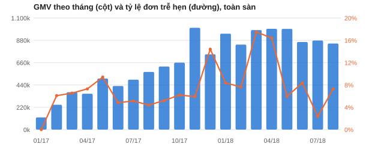
Bảng 3.2. Các vấn đề được sửa ở lớp Silver
| Vấn đề | Bằng chứng | Cách xử lý |
|---|---|---|
| Tên thành phố seller bẩn | 04482255, sao paulo / sao paulo, sao pauo, một địa chỉ email | Bỏ dấu, bỏ phần sau dấu phân cách, bỏ mã bang. Không hợp lệ thì lấy theo ZIP: 41 seller được sửa. Giữ tên gốc ở city_raw |
| Tên thành phố trong geolocation chưa thống nhất | 8.011 tên khác nhau, còn 5.969 sau khi bỏ dấu | Bỏ dấu trước khi lấy tên xuất hiện nhiều nhất của mỗi ZIP |
| Tọa độ nằm ngoài Brazil | 42 dòng, làm sai trung vị của 8 ZIP | Đưa vào ops.quarantine với mã GEO_OUTSIDE_BRAZIL |
| Thiếu bản dịch danh mục | 13 sản phẩm thuộc 2 danh mục | Bổ sung 2 bản dịch |
Nhóm ghi 19 quy tắc chất lượng vào bảng ops.dq_issue. Nguyên tắc chung: không đoán dữ liệu. Bất thường được giữ lại kèm cờ, hoặc được cách ly kèm mã lỗi, thay vì bị sửa hay điền giá trị giả. Bảng 3.3 liệt kê những bất thường ảnh hưởng tới thiết kế.
Bảng 3.3. Bất thường dữ liệu chính, cách xử lý và lý do
| Bất thường | Số lượng | Cách xử lý | Lý do |
|---|---|---|---|
| Đơn có nhiều seller | 1.278 đơn | Tách fact_order và fact_order_seller | Gán một seller cho cả đơn sẽ sai tiền và sai trách nhiệm |
| Đơn không có dòng hàng | 775 đơn | Giữ trong fact_order; seller_key = -1 | Không làm mất đơn khỏi tổng |
| Đơn có nhiều review | 547 đơn | Gộp về đơn ở fact_order, giữ từng review ở fact_review | Tránh nhân dòng khi join |
| review_id dùng cho nhiều đơn | 789 mã | Khóa của fact_review là (review_id, order_id) | Khóa đơn lẻ sẽ bị trùng |
| Tiền thanh toán khác tiền hàng cộng phí | 303 đơn | Giữ nguyên; GMV lấy từ dòng hàng | Phần lớn do lãi trả góp |
| Thứ tự thời gian vô lý | 189 đơn | Giữ, gắn cờ has_chronology_issue | Không biết mốc nào sai |
| Đã giao nhưng thiếu ngày giao | 8 đơn | Không điền giả | Không có căn cứ |
| ZIP không có tọa độ | 279 đơn, 7 seller | Giữ dòng, tọa độ NULL | Không đoán vị trí |
| Sản phẩm không có danh mục | 610 | Ghi Unknown | Không đoán |
| Tọa độ trùng theo ZIP | 981.148 dòng | Lấy trung vị theo ZIP | Trung vị ít bị ảnh hưởng bởi tọa độ lỗi |
Olist gửi khảo sát sau ngày hẹn giao, dù hàng đã tới hay chưa. Nhóm nạp review theo thời điểm khách trả lời và so với thời điểm nhận hàng. Kết quả: 70,2% review của đơn trễ được trả lời khi khách chưa nhận hàng, với điểm trung bình 1,66; nhóm trả lời sau khi nhận được 3,72 điểm. So trong cùng seller và cùng tháng, đơn trễ thấp hơn 1,91 sao, nhưng nếu chỉ xét review sau khi nhận thì chỉ thấp hơn 0,54 sao. Vì vậy review là chỉ báo yếu về chất lượng seller khi đơn bị trễ do vận chuyển.
Nhóm thiết kế theo bốn bước của Kimball [2]. Mỗi bước được quyết định từ câu hỏi nghiệp vụ ở Chương 1 và các bất thường ở Chương 3.
Bảng 4.1. Bốn bước thiết kế áp dụng cho đề tài
| Bước | Quyết định |
|---|---|
| 1. Chọn quy trình nghiệp vụ | Năm quy trình: bán hàng, hoàn tất đơn (giao hàng), đánh giá, thanh toán, và theo dõi seller theo tháng |
| 2. Khai báo grain | Dòng hàng; đơn; đơn × seller; review × đơn; phần thanh toán; seller × tháng. Grain đơn × seller là kết quả trực tiếp của 1.278 đơn nhiều seller |
| 3. Xác định dimension | Ngày (5 vai trò), khách hàng, vị trí (2 vai trò), trạng thái đơn, sản phẩm, seller (SCD2), tuyến, sức khỏe seller (mini-dimension) |
| 4. Xác định fact | Giá, phí, số lượng; các mốc và khoảng thời gian giao hàng; cờ trễ của seller và của khách; điểm review; tiền thanh toán; GMV và chỉ số theo tháng |
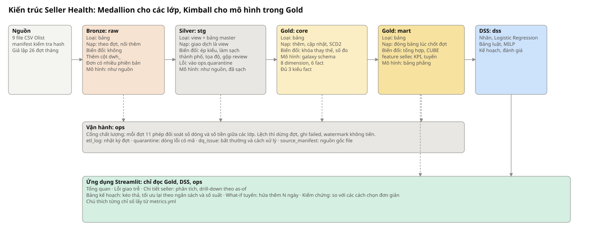
Bảng 4.2. Các schema trong kho
| Schema | Lớp | Số bảng | Nội dung |
|---|---|---|---|
| src | Nguồn | 9 view | View đọc trực tiếp 9 file CSV |
| raw | Bronze | 9 | Dữ liệu gốc dạng chữ cùng các cột dwh_; raw.orders giữ nhiều phiên bản của một đơn |
| stg | Silver | 5 + 5 view | Đã ép kiểu, làm sạch, gộp review theo đơn |
| core | Gold | 14 | 8 dimension và 6 fact |
| mart | Gold | 4 | Feature của seller, KPI tính bằng CUBE, thống kê tuyến, hạng tháng |
| dss | Kết quả DSS | 8 | Nhãn, điểm, khuyến nghị, đánh giá, độ nhạy, tham số mặc định |
| ops | Vận hành | 5 | Nhật ký nạp, cách ly, bất thường dữ liệu, đối soát giữa các lớp, manifest nguồn |
Công nghệ. Kho dùng DuckDB 2.0: lưu trữ dạng cột phù hợp truy vấn phân tích, hỗ trợ CUBE, ROLLUP, PIVOT và hàm cửa sổ, và cả kho chỉ là một file nên dựng lại hoặc đóng gói Docker đều đơn giản. Biến đổi viết bằng SQL thuần chạy theo thứ tự, Python chỉ điều phối. Cái giá phải trả là DuckDB chỉ cho một tiến trình ghi tại một thời điểm và không có phân quyền người dùng; mục 9 nêu hướng tách lớp phục vụ sang PostgreSQL nếu triển khai cho nhiều người dùng.
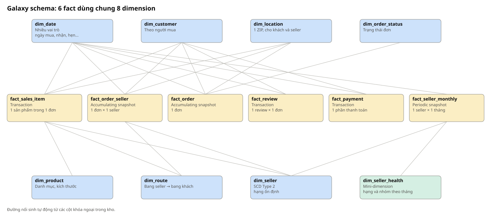
Bảng 4.3. Bus matrix: fact nào dùng dimension nào
| Fact | Ngày | Khách | Vị trí | Trạng thái | Sản phẩm | Seller | Tuyến | Sức khỏe |
|---|---|---|---|---|---|---|---|---|
| fact_sales_item | ✓ mua, hạn giao | ✓ | ✓ khách, seller | ✓ | ✓ | ✓ | ||
| fact_order | ✓ 5 vai trò | ✓ | ✓ khách | ✓ | ||||
| fact_order_seller | ✓ 5 vai trò | ✓ | ✓ khách, seller | ✓ | ✓ | |||
| fact_review | ✓ gửi, trả lời | ✓ | ||||||
| fact_payment | ✓ | ✓ | ||||||
| fact_seller_monthly | ✓ tháng | ✓ | ✓ |
Bảng 4.4. Sáu bảng fact
| Bảng | Kiểu | Grain | Số dòng | Số đo chính |
|---|---|---|---|---|
| fact_sales_item | Transaction | 1 sản phẩm trong 1 đơn | 112.650 | price, freight_value, qty; nguồn chuẩn của GMV |
| fact_order | Accumulating snapshot | 1 đơn | 99.441 | Các mốc; số ngày từng khâu; customer_late, any_seller_late |
| fact_order_seller | Accumulating snapshot | 1 đơn × 1 seller | 100.785 | seller_late, hạn bàn giao, giá trị đơn của seller |
| fact_review | Transaction | 1 review × 1 đơn | 99.224 | review_score, giờ trả lời, cờ trả lời trước khi nhận |
| fact_payment | Transaction | 1 phần thanh toán | 103.886 | Loại thanh toán, số kỳ, số tiền |
| fact_seller_monthly | Periodic snapshot | 1 seller × 1 tháng | 25.487 | GMV, số đơn, tỷ lệ trễ, review, số ngày từng khâu |
Bảng 4.5. Tám dimension
| Bảng | Số dòng | Thuộc tính đáng chú ý |
|---|---|---|
| dim_date | 1.827 | Năm, quý, tháng, thứ; cờ ngày lễ Brazil, cờ Black Friday. Role-playing: ngày mua, duyệt, giao vận chuyển, nhận, hẹn |
| dim_seller | 11.209 | SCD Type 2: health_tier, valid_from, valid_to, is_current |
| dim_seller_health | 361 | Mini-dimension: hạng tháng × nhóm số đơn × nhóm trễ × nhóm review |
| dim_customer | 96.097 | Theo customer_unique_id, tức khách thật |
| dim_product | 32.952 | Danh mục tiếng Anh, cân nặng, thể tích, nhóm kích thước |
| dim_location | 19.178 | Mọi ZIP; tọa độ trung vị, bang, vùng. Role-playing cho khách và seller |
| dim_route | 622 | Cặp bang seller → bang khách; khoảng cách xấp xỉ giữa tâm hai bang |
| dim_order_status | 8 | Trạng thái, thứ tự trong quy trình, cờ đã giao, cờ hủy |
Mọi dimension đều có dòng -1 (unknown member), nên fact không bao giờ có khóa ngoại mồ côi. Khóa thay thế (surrogate key) do kho sinh, tách khỏi khóa tự nhiên của nguồn; nhờ vậy một seller có thể có nhiều phiên bản trong SCD2.
Hạng sức khỏe của seller (Vàng, Ổn định, Ít đơn, Theo dõi, Nguy cơ, Tạm ngừng) được tính lại mỗi tháng theo bảng luật. Đo trên dữ liệu, hạng tính hằng tháng đổi ở 49% lượt chuyển tháng của seller có từ 6 đơn, vì xu hướng 30 ngày rất nhiễu. Đưa thẳng thuộc tính này vào SCD2 sẽ làm dim_seller phình to mà lịch sử không có nghĩa. Theo Kimball, nhóm tách làm hai:
Bảng 4.6. Hạng tháng và hạng ổn định
| Hạng tháng | Hạng ổn định | |
|---|---|---|
| Nằm ở | dim_seller_health qua fact_seller_monthly | dim_seller (SCD Type 2) |
| Đổi khi | Mỗi tháng tính lại | Hạng tháng giữ nguyên 2 kỳ liên tiếp |
| Mức đổi (01–07/2018) | 49% lượt chuyển tháng | 20% lượt chuyển tháng |
| Dùng để | Phát hiện sớm | Báo cáo theo hạng tại thời điểm bán |
Nhờ cách tách này, dim_seller giảm từ 5,75 xuống 3,62 dòng mỗi seller. Fact trỏ vào phiên bản có hiệu lực lúc mua, nên có thể trả lời câu hỏi như "GMV của seller trong thời gian họ ở hạng Vàng". Nhóm nói rõ trong báo cáo và trên giao diện: hạng do hệ thống tính ra, vì nguồn không có lịch sử thay đổi của seller; các thuộc tính địa chỉ chỉ có một bản và không được dựng lịch sử giả.
Bảng 4.7 tổng hợp các vấn đề thiết kế khó nhất, các phương án đã cân nhắc và lựa chọn cuối cùng.
Bảng 4.7. Vấn đề thiết kế, phương án và lựa chọn
| Vấn đề | Phương án đã cân nhắc | Lựa chọn và lý do |
|---|---|---|
| Grain giao hàng khi đơn có nhiều seller | (a) Một fact grain đơn, gán một seller; (b) chỉ fact đơn × seller | Hai fact: fact_order cho câu hỏi về đơn, fact_order_seller cho trách nhiệm từng seller. Phương án (a) sai trách nhiệm, (b) đếm dư khoảng 1% số đơn |
| Ai gây ra giao trễ? | Suy từ số ngày tới vận chuyển so với trung bình | Dùng hạn bàn giao có sẵn (shipping_limit_date): seller_late là lỗi khâu seller, customer_late là kết quả khách nhận |
| CSV chỉ có trạng thái cuối | Nạp một lần | Giả lập 26 đợt, che mốc tương lai; sinh được accumulating snapshot và lịch sử thật (Chương 5) |
| Tỷ lệ trễ tháng gần nhất luôn thấp giả tạo | Tính theo tháng mua | Tính theo tháng đến hạn; review theo tháng trả lời |
| Thuộc tính đổi nhanh | SCD2 toàn bộ | SCD2 cộng mini-dimension (mục 4.4) |
| Review nhiều đơn, đơn nhiều review | Khóa review_id | Khóa ghép (review_id, order_id); gộp riêng về grain đơn |
| Vị trí khách và seller | Bảng địa lý đứng riêng, không fact nào nối | Một dim_location hai vai trò, drill được tới thành phố và ZIP |
| Đếm khác nhau ở mọi mức tổng | Cộng từ chi tiết lên | Tính sẵn bằng CUBE; tỷ lệ lưu tử số và mẫu số riêng |
| Star hay snowflake | Tách vùng, bang ra bảng riêng | Star: dimension phi chuẩn hóa, ít join; dữ liệu nén cột nên phần dư thừa không đáng kể |
Metadata. Mỗi bảng và cột trong core, mart, dss, ops đều có mô tả (313/313 cột), được nạp vào kho từ catalog.yml và sinh tự động thành docs/data_catalog.md. Mọi KPI trên giao diện có định nghĩa, công thức, khoảng thời gian và nguồn trong metrics.yml; test hệ thống chặn việc giao diện dùng KPI chưa được định nghĩa. Quy tắc đặt tên nằm ở docs/naming_conventions.md.
Đề bài dùng từ ETL theo nghĩa chung cho quy trình đưa dữ liệu vào kho. Nhóm hiện thực quy trình này theo biến thể ELT: dữ liệu được trích xuất và nạp nguyên văn vào lớp raw, sau đó mới biến đổi ngay trong kho bằng SQL.
Bảng 5.1. Ba bước của ELT trong hệ thống
| Bước | Trong hệ thống | File |
|---|---|---|
| Extract | Đọc 9 CSV thành view src.*, kiểm tra hash | src/etl/build.py |
| Load | Chép nguyên văn dạng chữ vào raw.*, thêm cột dwh_batch và các cột kỹ thuật | 10_batch_raw.sql |
| Transform | raw → stg → core → mart, toàn bộ bằng SQL trong DuckDB | 01_staging.sql, 02_dimensions.sql, 11_batch_core.sql, 12_batch_close.sql |
Vì sao chọn ELT. Dữ liệu vừa phải nên DuckDB xử lý tốt mà không cần công cụ riêng như Pentaho. Lớp raw được giữ lại, nên khi đổi một định nghĩa (ví dụ ngưỡng của hạng) chỉ cần chạy lại phần biến đổi. SQL cũng dễ truy vết và kiểm thử.
CSV chỉ chứa trạng thái cuối cùng của mỗi đơn, trong khi kho phải thay đổi theo thời gian và DSS phải tái hiện được cảnh "đứng ở ngày X, chưa biết tương lai". Vì vậy, với mỗi tháng từ 09/2016 đến 10/2018, nhóm gọi c là ngày đầu tháng kế tiếp (ngày chốt) và chạy năm bước:
Bảng 5.2. Các bước của một đợt nạp
| Bước | File | Việc làm |
|---|---|---|
| 0. Kiểm tra nguồn (một lần) | build.py | So hash và số dòng với manifest; sai là dừng |
| 1. Nạp raw | 10_batch_raw.sql | Che các mốc từ c trở đi; chỉ thêm phiên bản mới của đơn khi trạng thái đổi; nạp dòng hàng, thanh toán của đơn mua trong tháng; nạp review khách trả lời trong tháng; cách ly dòng lỗi |
| 2. Cập nhật core | 11_batch_core.sql | Thêm vào transaction fact; tính lại các accumulating snapshot cho đơn có thay đổi |
| 3. Chốt tháng | 12_batch_close.sql | Tính feature seller, KPI (CUBE), thống kê tuyến từ trạng thái kho tại lúc đó; ghi hạng tháng; cập nhật SCD2 |
| 4. Cổng chất lượng | 13_batch_checks.sql | 11 phép đối soát số dòng và số tiền giữa các lớp, lũy kế tới đợt; lệch thì dừng |
| 5. Ghi log | build.py | Watermark, số dòng nạp, số dòng cách ly, số seller đổi hạng, thời gian chạy vào ops.etl_log |
Kết quả: 99.441 đơn sinh ra 137.236 phiên bản trong raw.orders (62.220 đơn có 1 phiên bản, 36.647 đơn có 2, 574 đơn có 3). Toàn bộ 26 đợt cộng đợt khởi tạo nạp 1.588.717 dòng trong khoảng 55 giây; đợt lâu nhất mất 3,7 giây. Test hệ thống xác nhận trạng thái cuối cùng trong kho trùng hoàn toàn với file gốc.
Bảng 5.3. Ví dụ thật: đơn 4530ebf3… qua các đợt nạp
| Đợt | Trạng thái | Duyệt | Giao vận chuyển | Khách nhận | Hẹn giao |
|---|---|---|---|---|---|
| 2018-06 | approved | 21/06 | chưa biết | chưa biết | 24/07 |
| 2018-07 | shipped | 21/06 | 02/07 | chưa biết | 24/07 |
| 2018-09 | delivered | 21/06 | 02/07 | 05/09 | 24/07 |
Dòng tương ứng trong fact_order được cập nhật qua từng đợt, đúng nghĩa accumulating snapshot. Đơn này là ví dụ của cả hai lỗi cùng lúc: seller bàn giao trễ (10,9 ngày) và vận chuyển mất thêm 65,1 ngày, khách nhận trễ 43 ngày. Tại as-of 01/07/2018, hệ thống chỉ biết đơn ở trạng thái approved, đúng như một người đứng ở ngày đó.
Mỗi đợt chạy 11 phép đối soát giữa các lớp: số đơn, số dòng hàng, tiền hàng, số dòng thanh toán, tiền thanh toán, số review, GMV tháng và GMV 90 ngày. Qua 26 đợt có 286/286 phép khớp. Tổng giá dòng hàng trong kho bằng đúng 13.591.643,70 BRL của nguồn, và tiền trong fact_order, fact_order_seller bằng tiền trong dòng hàng, chứng tỏ đơn nhiều seller không bị nhân đôi.
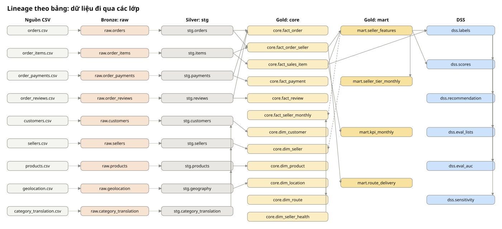
Kho là ROLAP: các phép OLAP được viết thành SQL trên lớp core. File src/sql/olap_examples.sql chứa 8 truy vấn mẫu, mỗi câu trả lời một câu hỏi nghiệp vụ và đều được test hệ thống chạy để bảo đảm có kết quả.
Bảng 6.1. Tám truy vấn OLAP mẫu
| Phép | Câu hỏi | Kỹ thuật |
|---|---|---|
| Roll-up | GMV từ tháng lên quý, lên năm, kèm dòng tổng | GROUP BY ROLLUP trên phân cấp của dim_date |
| Drill-down | Sudeste → bang SP → từng seller | Phân cấp vùng → bang → seller; dùng phiên bản SCD2 tại lúc mua |
| Slice | Chỉ danh mục housewares: GMV và review theo tháng | Cố định một chiều |
| Dice | Khách ở SP, quý 4/2017, đơn trễ, theo tuyến | Lọc trên ba chiều |
| Pivot | GMV theo tháng × hạng sức khỏe lúc bán | Lệnh PIVOT |
| Cube | Tổng theo vùng của một tháng, lấy từ mart | GROUP BY CUBE (region, category_en) |
| Point-in-time | Phân bố hạng seller tại 15/01/2018 | Lọc SCD2 theo valid_from, valid_to |
| Role-playing | Đơn Black Friday 2017: ngày mua và ngày giao | Một dim_date cho hai vai trò |
Ví dụ câu tính sẵn khối KPI trong lúc chốt mỗi đợt. Số đơn và số seller là đếm khác nhau, không cộng dồn được từ chi tiết lên, nên CUBE tính lại cho từng tổ hợp. Tỷ lệ trễ được lưu dưới dạng tử số và mẫu số để không mắc lỗi lấy trung bình của các tỷ lệ:
INSERT INTO mart.kpi_monthly
SELECT CAST(getvariable('m0') AS DATE), region, category_en,
GROUPING(region) = 1, GROUPING(category_en) = 1,
coalesce(sum(price) FILTER (WHERE in_sale), 0),
count(DISTINCT order_id) FILTER (WHERE in_sale),
count(DISTINCT seller_id) FILTER (WHERE in_sale),
count(DISTINCT order_id) FILTER (WHERE in_due),
count(DISTINCT order_id) FILTER (WHERE in_due AND is_late),
avg(review_score) FILTER (WHERE in_rev)
FROM e WHERE in_sale OR in_due OR in_rev
GROUP BY CUBE (region, category_en);Màn Đa chiều (OLAP) đưa cả năm phép OLAP lên giao diện, không cần viết SQL. Người dùng chọn một trong bốn phân cấp: seller theo địa lý (vùng → bang → thành phố → seller), danh mục → seller, thời gian (năm → quý → tháng), khách theo địa lý (vùng → bang). Bấm vào một cột để đi sâu xuống (drill-down); bấm vào đường dẫn ở trên để quay lên (roll-up). Thanh khoảng thời gian là slice theo thời gian; nút Dice lọc theo danh mục, vùng seller, vùng khách; ô "Chia theo" xoay sang chiều thứ hai thành bảng nhiệt (pivot). Mỗi thao tác sinh một câu SQL trên lớp core, hiển thị ngay trên màn hình, kèm dòng tổng do GROUP BY ROLLUP sinh ra.
Mọi số trên màn này tính tại mốc as-of: chỉ dùng đơn mua trước as-of; trễ chỉ tính đơn đã tới ngày hẹn; review chỉ tính review đã có. Seller được lấy theo phiên bản SCD2 lúc bán. Với các độ đo dạng tỷ lệ, thành viên có dưới 30 đơn bị loại để tránh nhiễu. Nhóm đối chiếu với câu SQL viết độc lập: GMV, số đơn, số seller khớp tuyệt đối.
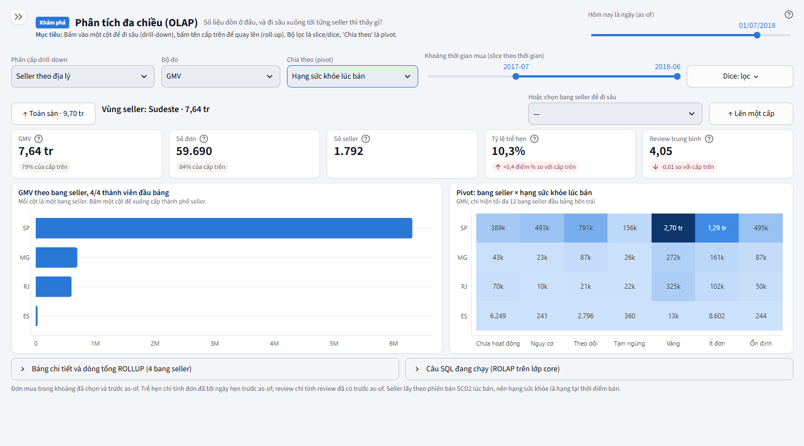
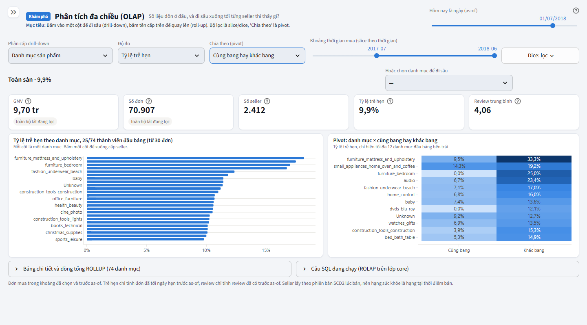
Trong 12 tháng trước 01/07/2018, đơn giao khác bang trễ hẹn 12,3% (41.437 đơn đến hạn), trong khi đơn cùng bang chỉ trễ 5,6% (23.802 đơn). Chênh lệch này lặp lại ở hầu hết danh mục. Kết hợp với kết quả ở màn Lỗi giao trễ, điều này củng cố kết luận rằng phần lớn giao trễ nằm ở khâu vận chuyển liên bang, không phải ở seller.
Ứng dụng có 7 màn hình, nằm trong một sidebar bên trái thu gọn được. Mỗi màn vừa khung 1440 × 800 điểm ảnh, không phải cuộn; ở cửa sổ khác cỡ, bố cục tự dàn theo chiều rộng thật và chữ co nhẹ theo bề ngang. KPI được gom thành nhóm có nhãn, mỗi thẻ và mỗi biểu đồ nằm trong một ô riêng. Thanh trên cùng có thanh trượt "Hôm nay là ngày (as-of)" để tua thời gian; mọi màn hình chỉ thấy dữ liệu trước ngày đó. Tiêu đề biểu đồ nêu kết luận và được sinh tự động từ số liệu, nên tự đổi theo khi đổi as-of. Mỗi KPI có biểu tượng chú thích hiện định nghĩa, công thức và nguồn lấy từ metrics.yml.
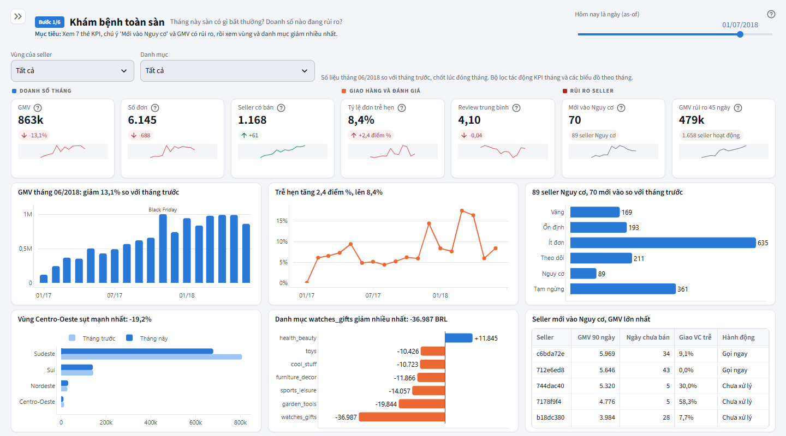
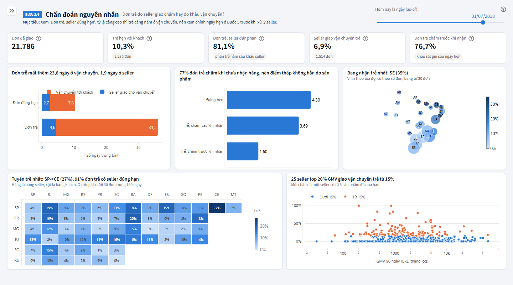
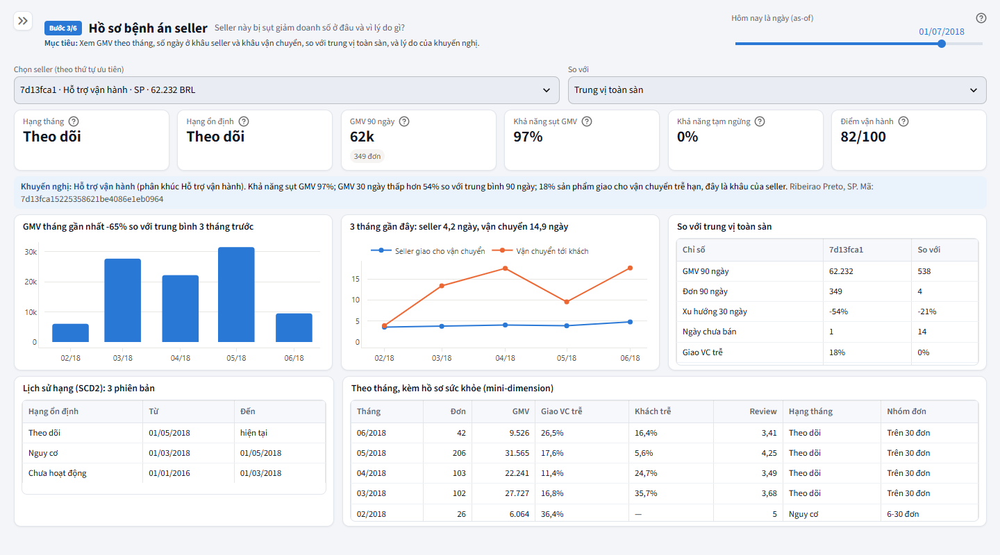
Theo cách phân loại ở mục 2.4, Seller Health là một hybrid DSS: model-driven (mô hình dự báo và tối ưu) kết hợp knowledge-driven (bảng luật), trên nền data-driven (kho dữ liệu và các màn BI). Bảng 7.1 ánh xạ các thành phần của một DSS vào hệ thống.
Bảng 7.1. Thành phần DSS trong hệ thống
| Thành phần | Hiện thực | Mã nguồn |
|---|---|---|
| Quản lý dữ liệu | Kho DuckDB: core, mart; kết quả DSS ghi vào schema dss | src/sql/, src/etl/ |
| Quản lý mô hình | Hồi quy logistic huấn luyện cuốn; bảng luật; MILP; đánh giá và độ nhạy | src/dss/run.py, rules.py, optimize.py |
| Tri thức | Ngưỡng và luật nghiệp vụ, lý do bằng chữ, định nghĩa KPI | rules.py, metrics.yml |
| Giao diện | Streamlit 7 màn hình, bảng kế hoạch kéo thả tự viết bằng SortableJS | src/app/ |
Đặc tính của DSS được giữ đúng: hệ thống đề xuất chứ không tự quyết định. Người dùng đổi tham số, kéo thẻ để sửa kế hoạch; hệ thống tính lại chi phí và cảnh báo khi vượt ràng buộc. Mọi giả định không có trong dữ liệu (chi phí, hiệu quả can thiệp) được tách vào một nút "Giả định" và ghi rõ trên giao diện.
Bảng 7.2. Bốn pha của Simon và màn hình tương ứng
| Pha | Hệ thống làm gì | Màn hình |
|---|---|---|
| Intelligence | Phát hiện bất thường, tách nguyên nhân trễ, khoanh vùng theo nhiều chiều | Tổng quan, Lỗi giao trễ, Chi tiết seller, Đa chiều (OLAP) |
| Design | Ước lượng rủi ro, giá trị, vận hành; sinh các phương án hành động cho từng seller | Bảng kế hoạch, Chi tiết seller |
| Choice | Luật và tối ưu đề xuất; người dùng sửa bằng kéo thả; so sánh mức ngân sách; what-if lời hẹn giao | Bảng kế hoạch, What-if tuyến |
| Implementation | Xuất kế hoạch ra CSV; theo dõi kết quả các tháng đã biết | Bảng kế hoạch, Kiểm chứng |
Feature tại mỗi as-of. Quần thể là seller có ít nhất một đơn hợp lệ trong 90 ngày trước as-of. Các feature gồm GMV và số đơn 90 và 30 ngày, xu hướng trend = gmv_30 / (gmv_90 / 3) − 1, số ngày từ đơn gần nhất, thâm niên, số danh mục, tỷ lệ bàn giao trễ, tỷ lệ khách nhận trễ, review trung bình và số ngày tới vận chuyển. Tất cả được tính lúc chốt đợt trong mart.seller_features.
Nhãn. Nhãn quan sát 45 ngày sau as-of, được tính sau khi nạp xong và để riêng trong dss.labels:
gmv_next45 = Σ price trong [c, c + 45 ngày)
decline = gmv_next45 < 0,5 × (gmv_90 / 2) -- sụt GMV, tỷ lệ gốc 44–51%
dormant = gmv_next45 = 0 -- tạm ngừng, tỷ lệ gốc 31–33%
loss = max(gmv_90 / 2 − gmv_next45, 0) -- GMV mấtThuật toán và cách huấn luyện. Hồi quy logistic có chuẩn hóa, một mô hình cho mỗi nhãn: p = 1 / (1 + e−(b0 + Σ bkzk)). Mô hình được huấn luyện cuốn theo thời gian: tại as-of t, chỉ học từ các as-of ≤ t − 45 ngày, vì nhãn của các mốc gần hơn chưa quan sát xong. Ví dụ mốc 01/07/2018 học 14.835 dòng, mốc train mới nhất là 01/05/2018. Một test tự động kiểm tra khoảng cách này.
Bảng 7.3. Hệ số lớn nhất tại as-of 01/07/2018 (feature đã chuẩn hóa)
| Feature | Sụt GMV | Tạm ngừng | Diễn giải |
|---|---|---|---|
| orders_30 | −1,30 | −3,37 | Tháng gần đây nhiều đơn thì rủi ro thấp |
| orders_90 | +0,80 | −0,74 | Khác dấu: seller bán nhiều ít khả năng dừng hẳn, nhưng dễ tụt so với mức cao của chính họ |
| recency | +0,56 | +0,59 | Lâu không có đơn thì rủi ro cao |
| seller_late_rate | +0,16 | +0,20 | Có đóng góp nhưng nhỏ |
Ba cờ được tính trước, tất cả chỉnh được trên giao diện: rủi ro cao khi p_decline ≥ 0,30; giá trị cao khi thuộc top 20% GMV 90 ngày tại as-of; vận hành kém khi tỷ lệ bàn giao trễ ≥ 15% trên ít nhất 5 sản phẩm đã qua hạn. Ngưỡng 0,30 được chọn trên giai đoạn 09/2017–02/2018, tách khỏi giai đoạn đánh giá.
Bảng 7.4. Bảng luật phân khúc
| Rủi ro | Giá trị | Vận hành | Phân khúc | Hướng xử lý |
|---|---|---|---|---|
| Cao | Cao | Ổn | Giữ chân ngay | Ứng viên gọi điện |
| Cao | Cao | Kém | Hỗ trợ vận hành | Ứng viên hỗ trợ vận hành |
| Cao | Thấp | Bất kỳ | Email tự động | Email, không tốn ngân sách |
| Thấp | Bất kỳ | Kém | Cảnh báo vận hành | Email cảnh báo |
| Thấp | Cao | Ổn | Seller vàng | Không can thiệp |
| Thấp | Thấp | Ổn | Theo dõi | Không can thiệp |
Hệ thống sinh lý do bằng chữ từ số thật cho từng seller, và nói rõ khi lỗi có thể nằm ở vận chuyển, ví dụ: "17/30 đơn trễ có seller đúng hạn, nên xem lại tuyến thay vì phạt seller".
Các seller rủi ro cao và giá trị cao là ứng viên cho hai hành động tốn nguồn lực: gọi điện giữ chân và hỗ trợ vận hành. Hai hành động có chi phí và số suất nhân viên khác nhau, nên bài toán không thể giải bằng cách lấy top N mà là một bài toán cái túi nhiều ràng buộc:
Tối đa Σ_i Σ_a p_decline_i × value45_i × hiệu_quả(a, vận_hành_i) × x_ia
Ràng buộc Σ_i Σ_a chi_phí_a × x_ia ≤ ngân sách (mặc định 2.000 BRL)
Σ_i Σ_a suất_a × x_ia ≤ số suất nhân viên (mặc định 40)
Σ_a x_ia ≤ 1 với mỗi seller i
x_ia ∈ {0, 1}, a ∈ {Gọi điện, Hỗ trợ vận hành}, value45_i = gmv_90_i / 2Bài toán được giải chính xác bằng quy hoạch tuyến tính nguyên qua scipy.optimize.milp (bộ giải HiGHS) và giải lại mỗi khi người dùng đổi tham số. Một test so bộ giải với đáp án tính tay trên 4 seller.
Bảng 7.5. Tham số mặc định (giả định của nhóm, không có trong dữ liệu)
| Gọi điện | Hỗ trợ vận hành | ||
|---|---|---|---|
| Chi phí (BRL) | 50 | 150 | 0 |
| Suất nhân viên | 1 | 2 | 0 |
| Hiệu quả nếu vận hành kém | 8% | 30% | 3% |
| Hiệu quả nếu vận hành ổn | 20% | 5% | 3% |
Các con số này thể hiện một logic chứ không phải dự đoán: seller lỗi vận hành thì gọi điện ít tác dụng hơn hỗ trợ, seller vận hành ổn thì ngược lại. Mục 8.5 phân tích kế hoạch thay đổi thế nào khi các giả định này thay đổi.
Bảng kế hoạch là màn hình chính của DSS. Hàng trên có bốn thanh trượt: ngân sách, số suất, ngưỡng rủi ro, mức giá trị cao; nút "Giả định" chứa chi phí và hiệu quả. Bên dưới là bảng Kanban bốn cột (Gọi ngay, Hỗ trợ vận hành, Email tự động, Chưa xử lý). Người dùng kéo thẻ giữa các cột; các số tổng hợp (tiền đã dùng, suất đã dùng, GMV rủi ro trong kế hoạch, giá trị giữ được theo giả định) cập nhật ngay, và hệ thống báo đỏ khi vượt ràng buộc. Đường cong ngân sách giải lại bài toán với từng mức từ 0 đến 8.000 BRL.
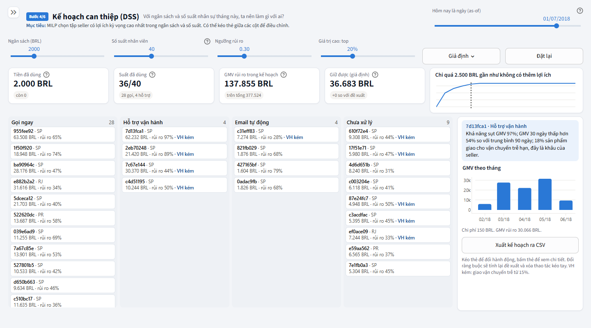
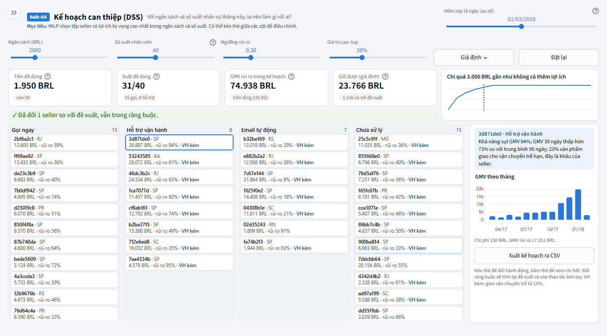
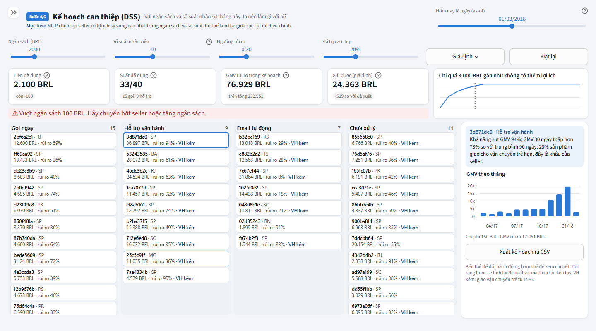
What-if tuyến trả lời câu hỏi: nếu hứa ngày giao dài thêm N ngày cho một tuyến thì tỷ lệ trễ còn bao nhiêu, và cần hứa thêm bao nhiêu ngày để đạt mục tiêu. Phép tính dùng đơn đã giao mua từ 180 đến 60 ngày trước as-of. Giới hạn được ghi ngay trên màn hình: giả định thời gian giao không đổi, và không đo được việc hẹn dài hơn làm mất bao nhiêu đơn.
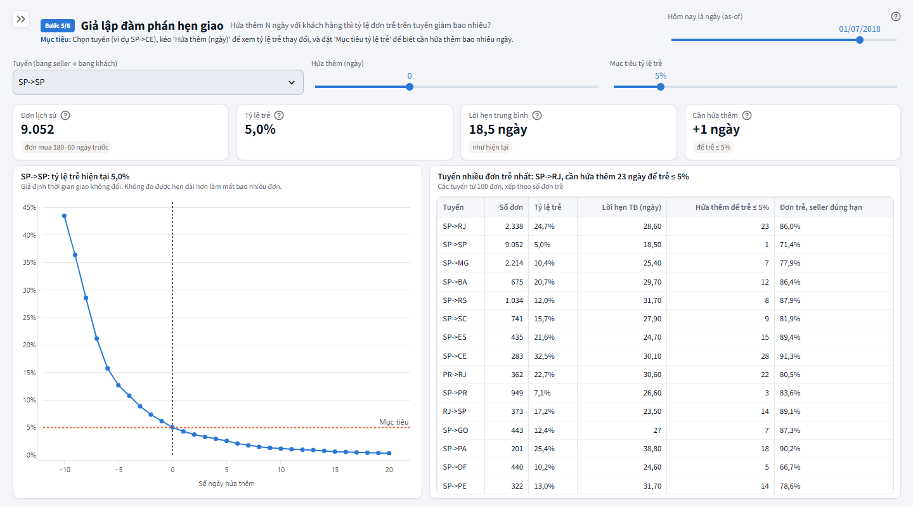
Seller 7d13fca1… ở Ribeirão Preto (SP) đứng đầu kế hoạch tại as-of 01/07/2018. Ví dụ này cho thấy dữ liệu đi từ kho tới quyết định như thế nào.
Bảng 7.6. Dữ liệu theo tháng của seller, lấy từ fact_seller_monthly
| Tháng | Số đơn | GMV (BRL) | Bàn giao trễ | Review | Ngày tới VC | Ngày vận chuyển |
|---|---|---|---|---|---|---|
| 02/2018 | 26 | 6.064 | 36,4% | 5,00 | 3,5 | 3,9 |
| 03/2018 | 102 | 27.727 | 16,8% | 3,68 | 3,7 | 13,4 |
| 04/2018 | 103 | 22.241 | 11,4% | 3,49 | 4,1 | 17,6 |
| 05/2018 | 206 | 31.565 | 17,6% | 4,25 | 3,9 | 9,6 |
| 06/2018 | 42 | 9.526 | 26,5% | 3,41 | 4,8 | 17,7 |
Điểm đáng chú ý: luật hạng chỉ xếp seller này ở Theo dõi vì họ vẫn có đơn gần đây, nhưng mô hình đã đưa họ lên đầu nhờ số đơn giảm mạnh. Đây là ví dụ cho thấy mô hình bổ sung cho luật.
Bảng 7.7. Toàn bộ kế hoạch tháng đó (as-of 01/07/2018, 1.658 seller đang hoạt động)
| Hành động | Phân khúc | Số seller | Chi phí (BRL) | GMV rủi ro (BRL) |
|---|---|---|---|---|
| Gọi ngay | Giữ chân ngay | 28 | 1.400 | 88.979 |
| Hỗ trợ vận hành | Hỗ trợ vận hành | 4 | 600 | 48.876 |
| Email tự động | 1.212 | 0 | 133.861 | |
| Cảnh báo vận hành | 21 | 0 | 6.960 | |
| Chưa xử lý | Giữ chân ngay, hết ngân sách | 124 | 0 | 79.990 |
| Chưa xử lý | Hỗ trợ vận hành, hết ngân sách | 31 | 0 | 25.819 |
| Chưa xử lý | Seller vàng | 131 | 0 | 82.625 |
| Chưa xử lý | Theo dõi | 107 | 0 | 12.349 |
Có 155 seller rủi ro cao, giá trị cao bị để lại do hết ngân sách. Đây chính là chỗ cần đến quyết định của người dùng: chấp nhận, xin thêm ngân sách (đường cong cho thấy lợi ích tăng thêm rất ít sau 2.500 BRL), hoặc kéo thả để đổi ưu tiên.
Nhóm phát triển DSS theo cách lặp và tiến hóa mà tài liệu môn học khuyến nghị cho DSS [3]: làm nhanh một bản thử, đo trên dữ liệu thật, rồi sửa thiết kế theo kết quả đo, thay vì chốt toàn bộ yêu cầu từ đầu.
Danh sách đầy đủ các lỗi đã tìm thấy và cách sửa nằm ở mục 8.6.
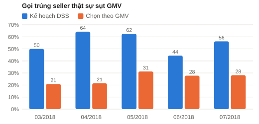
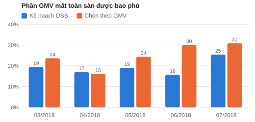
Bảng 8.1. Kết quả theo tháng
| Tháng | Số seller | Gọi trúng: DSS | Gọi trúng: GMV | Bao phủ: DSS | Bao phủ: GMV |
|---|---|---|---|---|---|
| 03/2018 | 24 | 50,0% | 20,8% | 19,5% | 23,7% |
| 04/2018 | 28 | 64,3% | 21,4% | 17,0% | 16,1% |
| 05/2018 | 32 | 62,5% | 31,3% | 19,1% | 24,4% |
| 06/2018 | 36 | 44,4% | 27,8% | 15,7% | 30,1% |
| 07/2018 | 32 | 56,3% | 28,1% | 25,5% | 31,0% |
| Trung bình | 55,5% | 25,9% | 19,3% | 25,1% |
Diễn giải. DSS gọi trúng khoảng gấp đôi, nhưng bao phủ ít tiền hơn ở 4/5 tháng, vì seller rất lớn có xác suất sụt thấp mà số tiền sụt vẫn lớn. Chọn theo GMV bao phủ nhiều tiền hơn, nhưng khoảng 3/4 cuộc gọi đến seller không sụt. Người dùng điều chỉnh đánh đổi này bằng ngưỡng rủi ro. Một phần "GMV mất" của seller lớn chỉ là biến động tự nhiên, nên chỉ số này có lợi thế sẵn cho cách chọn theo GMV.
Bảng 8.2. Năm cách chọn 50 seller (trung bình 5 tháng)
| Cách chọn | Gọi trúng | Bao phủ |
|---|---|---|
| Theo số ngày không bán | 78,8% | 0,9% |
| Luật đơn giản | 66,0% | 8,6% |
| DSS (rủi ro × giá trị) | 47,2% | 31,1% |
| Chọn ngẫu nhiên | 46,8% | 3,4% |
| Theo GMV | 29,2% | 33,5% |
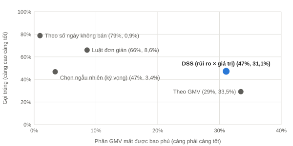
Bảng 8.3. AUC trên 5 mốc đánh giá 03–07/2018
| Mục tiêu | AUC mô hình | AUC khi bỏ chỉ số vận hành | AUC chỉ dùng số ngày không bán |
|---|---|---|---|
| Tạm ngừng | 0,80–0,84 | 0,80–0,84 | 0,77–0,80 |
| Sụt GMV | 0,67–0,73 | 0,67–0,73 | 0,66–0,73 |
Mô hình chỉ nhỉnh hơn cách đơn giản, và chỉ số vận hành gần như không giúp dự báo. Nhóm vì vậy không dùng độ chính xác của mô hình làm luận điểm chính. Giá trị của DSS nằm ở phần quyết định: kết hợp rủi ro với giá trị, chọn đúng hành động cho đúng nguyên nhân, và cho thấy tác động của ràng buộc ngân sách.
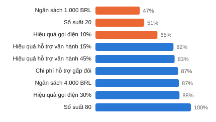
Hình 8.3 cho biết danh sách được chọn trùng bao nhiêu với danh sách gốc (chỉ số Jaccard) khi đổi từng giả định. Danh sách khá vững khi hiệu quả giả định đổi vừa phải (trùng 65–88%), nhưng đổi mạnh khi cắt ngân sách hoặc nhân sự. Gấp đôi ngân sách lên 4.000 BRL chỉ tăng khoảng 5% giá trị, vì lúc đó giới hạn lại nằm ở số suất; còn tăng số suất lên 80 mà giữ 2.000 BRL thì không đổi gì. Hai ràng buộc phải được nới cùng nhau. Đây là loại kết luận chỉ có được nhờ mô hình tối ưu.
Bảng 8.4. Ba bộ kiểm thử tự động
| Bộ test | Phạm vi | Kết quả |
|---|---|---|
| tests/test_system.py | Nguồn, Bronze, Silver, Gold, đối soát, chống rò rỉ, OLAP, tối ưu, tài liệu, cổng chất lượng | 126/126 |
| tests/test_edges.py | 7 màn hình × 13 mốc as-of, bộ lọc hiếm, đo thời gian xử lý | 115/115 |
| tests/test_ui.py | Trình duyệt Edge thật: kéo thả bằng chuột, bấm thẻ, xuất CSV, số trên giao diện khớp SQL, không cuộn ở 1440 × 800 | 53/53 |
Bảng 8.5. Một số kiểm tra đáng chú ý
| Kiểm tra | Chứng minh điều gì |
|---|---|
| Tổng giá dòng hàng trong kho = 13.591.643,70 BRL | Không mất, không nhân tiền |
| Tính lại feature từ CSV bằng pandas, đối chiếu từng seller | Kho đúng, kiểm tra bằng một con đường độc lập |
| Không đợt nào thấy mốc sau ngày chốt | Không rò rỉ khi nạp |
| Train cách test ít nhất 45 ngày | Không rò rỉ nhãn |
| Xóa một dòng ở Gold rồi chạy đợt | Cổng chất lượng dừng đợt, ghi failed, watermark không tiến |
| Sửa hash trong manifest | Bị chặn trước khi đụng vào kho |
| Tối ưu trên bài tính tay 4 seller | Bộ giải cho đúng đáp án |
| Kéo 1 seller khỏi cột Gọi: chi phí 2.000 → 1.950 | Giao diện tính đúng |
| Dựng lại trên môi trường sạch và trong Docker | Chạy lại được từ đầu; 126 test đạt ngay trong bước build Docker |
Bảng 8.6. Lỗi đã tìm thấy trong quá trình làm và cách sửa
| Lỗi | Phát hiện nhờ | Cách sửa |
|---|---|---|
| Tăng ngân sách mà danh sách không đổi: bộ tối ưu vô nghĩa | Phân tích độ nhạy | Chọn lại ngưỡng và ngân sách trên giai đoạn riêng |
| Review nạp theo ngày gửi khảo sát, lọt thông tin tương lai | So với một phân tích công khai khác | Nạp theo thời điểm khách trả lời |
| Hạng seller đổi quá nhiều | Đọc nhật ký nạp | Thêm hạng Ít đơn; tách mini-dimension và hạng ổn định |
| Thư viện kéo thả lỗi khi cột có thanh cuộn | Test trình duyệt | Tự viết component bằng SortableJS |
| Giao dịch lớn làm DuckDB lỗi khi COMMIT | Chạy thử | Bỏ giao dịch; dừng đợt và chạy lại an toàn |
| Tên sp lọt vào danh sách thành phố hợp lệ | Test Silver | Loại tên 2 ký tự |
| Bộ tối ưu lỗi khi không có seller nào được chọn | Test bài tính tay | Sửa kiểu dữ liệu |
| Thiếu thư viện trong requirements.txt | Dựng lại trên môi trường sạch | Bổ sung; thêm bước kiểm tra mở app |
Bảng 9.1. Hạn chế và ảnh hưởng
| Hạn chế | Ảnh hưởng |
|---|---|
| Không có dữ liệu hiệu quả can thiệp, không có nhóm đối chứng | Không kết luận được DSS giữ được bao nhiêu tiền; "gọi trúng" chỉ nghĩa là seller có sụt thật |
| Chi phí và hiệu quả là giả định | Danh sách và giá trị giữ được phụ thuộc giả định; đã có phân tích độ nhạy |
| Nạp theo tháng là giả lập từ file cuối cùng | Không có độ trễ dữ liệu thật; đơn hủy hiện trạng thái hủy ngay từ tháng mua (rò rỉ nhỏ còn sót) |
| Mô hình chỉ nhỉnh hơn cách đơn giản; xác suất chưa hiệu chỉnh | Nên dùng để xếp thứ tự, không đọc như tỷ lệ chính xác |
| Hạng ổn định vẫn đổi ở 20% lượt chuyển tháng | Chưa đủ để làm cơ sở hành động một mình |
| DuckDB: một tiến trình ghi, không phân quyền, không rollback đợt lớn | Phù hợp đồ án và một nhóm người dùng; chưa phù hợp triển khai nhiều người dùng |
| Một nguồn dữ liệu; bộ Marketing Funnel chưa tích hợp | Chưa thể hiện tích hợp nhiều nguồn khác nhau |
| Người dùng là giả định; dữ liệu 2016–2018 | Chưa kiểm chứng với đội Seller Success thật; không đại diện hiện tại |
Nhóm đã xây dựng một hệ thống hoàn chỉnh từ dữ liệu thô đến quyết định: kho dữ liệu đa chiều có lịch sử thật, quy trình ELT 26 đợt có cổng chất lượng, giao diện phân tích OLAP, và một DSS kết hợp dự báo, luật và tối ưu. Mọi phần đều chạy lại được bằng một lệnh hoặc bằng Docker, và được kiểm tra bởi 294 kiểm thử tự động.
Về chuyên môn kho dữ liệu, bài học lớn nhất là grain và thời điểm. Hai quyết định có ảnh hưởng nhất của dự án là tách grain đơn × seller và giả lập nạp theo tháng với các mốc tương lai bị che. Chúng không đến từ lý thuyết mà từ việc đo dữ liệu trước khi thiết kế. Về DSS, bài học là phải đánh giá trung thực: mô hình chỉ nhỉnh hơn cách đơn giản, và hệ thống thua cách chọn theo GMV ở chỉ số bao phủ tiền. Nhưng chính kho dữ liệu đã cho ra phát hiện có giá trị nhất: phần lớn giao trễ là do vận chuyển, nên quyết định đúng thường là sửa tuyến hoặc lời hẹn chứ không phải phạt seller.
Hệ thống đáp ứng đủ năm mục tiêu kỹ thuật của đề và thể hiện cả 11 chuẩn đầu ra của học phần, như đã đối chiếu ở đầu báo cáo.
Bảng A.1. Vai trò và mức đóng góp
| Thành viên | Vai trò | Phần việc | Đóng góp |
|---|---|---|---|
| Nguyễn Khánh Trinh | [vai trò] | [phần việc] | [%] |
| [Thành viên 2] | [vai trò] | [phần việc] | [%] |
| [Thành viên 3] | [vai trò] | [phần việc] | [%] |
Gợi ý chia vai trò theo mã nguồn: thiết kế kho và ELT (src/sql, src/etl); DSS và đánh giá (src/dss); giao diện và BI (src/app).
# Cách 1: Docker (khuyến nghị) – dựng kho, DSS và chạy 126 test ngay khi build
git clone https://github.com/trinh-say-hi/DW_DSS.git
cd DW_DSS
docker compose up --build # mở http://localhost:8501
# Cách 2: Windows, chạy trực tiếp
powershell -ExecutionPolicy Bypass -File .\setup.ps1 # cài thư viện, dựng kho và DSS, chạy test
powershell -ExecutionPolicy Bypass -File .\run_app.ps1 # mở http://localhost:8501Kịch bản demo 3 phút tại as-of 01/07/2018: (1) Tổng quan: GMV giảm 13%, trễ tăng, 70 seller mới vào Nguy cơ; (2) Lỗi giao trễ: 81% đơn trễ là do vận chuyển; (3) Đa chiều: drill xuống Sudeste, SP, thấy đơn khác bang trễ gấp đôi; (4) Chi tiết seller: seller ưu tiên số 1 cần hỗ trợ vận hành; (5) Bảng kế hoạch: 28 gọi, 4 hỗ trợ, kéo ngân sách lên 4.000 để thấy lợi ích gần như không tăng; (6) What-if tuyến; (7) Kiểm chứng: gọi trúng gấp đôi, kèm giới hạn.
| Đường dẫn | Vai trò |
|---|---|
| run_all.py | Chạy toàn bộ: kho → DSS → catalog → test |
| src/etl/build.py | Kiểm tra nguồn, điều phối ELT theo đợt, watermark, cổng chất lượng, ghi log |
| src/sql/00–02_*.sql | Schema, Silver, dimension |
| src/sql/10–13_batch_*.sql | Một đợt nạp: Bronze, Gold, chốt tháng, đối soát |
| src/sql/olap_examples.sql | 8 truy vấn OLAP mẫu |
| src/dss/run.py, rules.py, optimize.py | Nhãn, mô hình, đánh giá, độ nhạy; bảng luật và lý do; MILP và đường cong ngân sách |
| src/app/ | Ứng dụng 7 màn hình; screens_olap.py là màn đa chiều |
| catalog.yml, metrics.yml | Mô tả bảng, cột và định nghĩa KPI |
| tests/, evidence/ | Ba bộ kiểm thử và kết quả, ảnh chụp giao diện |
| docs/ | Tài liệu thiết kế chi tiết, data catalog, quy tắc đặt tên, sơ đồ |
Quy mô mã nguồn: khoảng 760 dòng SQL và 2.750 dòng Python (kể cả kiểm thử và script).